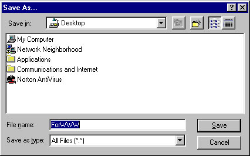

Page index / PC-MacRussian
Step One on russification of web browsers
Step One
First, you need Cyrillic Web fonts to be able to view Russian on your web browsers.
You will want to download a file to your desktop. When you begin to download, you will be asked if you want more info, simply press "save file." Then you will be shown a "Save as" window that you see below. Be sure to return to the desktop by clicking on the file folder icon to the immediate right of the "Save in:" title bar. When you see Desktop in the white "Save in:" box, then press the Save Button in the lower right hand corner. If you are ready click here. After the file has been downloaded you should go on to the next step by clicking the "Next Step" link

Next Step